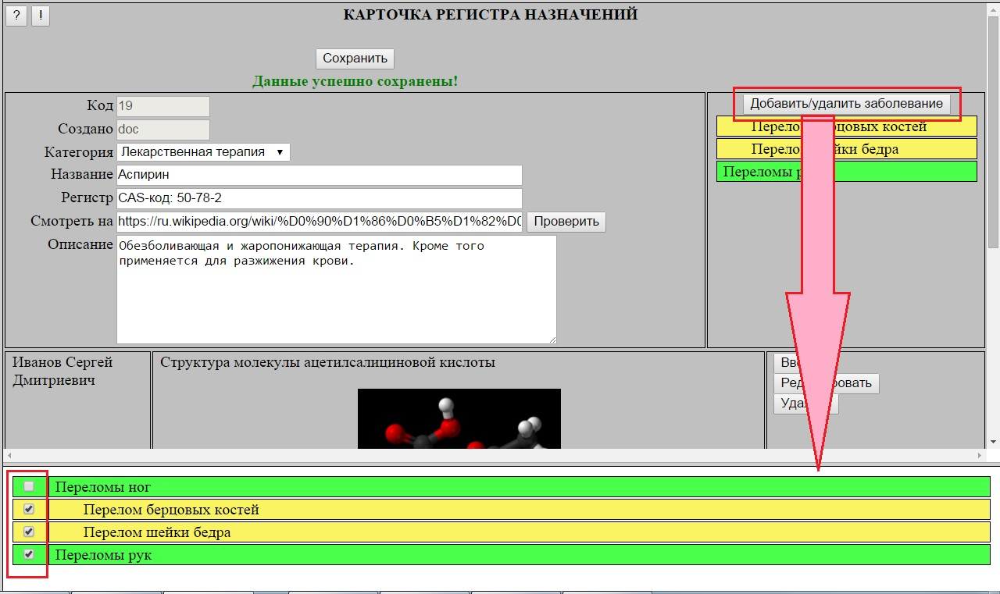

Назначение Реестра заболеваний, кроме выполнения справочной функции - обеспечение возможности привязки назначений к конкретным заболеваниям
и группам заболеваний с целью облегчения формирования специфических курсов лечения.
В отличии от Регистра назначений перечень групп заболеваний, по которым ведется структурирование реестра
не ограничен и может пополняться пользователями по мере необходимости.
Сразу после перехода в Реестр отображается только перечень групп заболеваний (записи зеленого цвета).
При клике по группе происходит ее раскрытие в список заболеваний, включенных в данную группу. При повторном клике список заболеваний сворачивается. Одновременно может быть раскрыт список заболеваний только для одной из групп – предыдущий будет автоматически свернут.
При клике на запись конкретного заболевания в нижней секции экрана отображается сокращенный вариант Карточки заболевания.
Для добавления в Реестр нового заболевания или группы заболеваний используетя кнопка "Добавить заболевание в реестр".
При этом в случае добавления группы заболеваний в поле "Категория" выбирается значение "Группа заболеваний".
Для конкретного заболевания в поле "Категория" выбирается название группы заболеваний, к которым описывамое заболевание будет отнесено.
В остальном заполнение Карточки заболевания для групп заболеваний и для отдельных заболеваний ничем не отличается и аналогично возможностям, реализованным в Карточке назначения.
Привязка назначений к заболеваниям
В карточке назначения Общего регистра назначений добавлена возможность привязки данного назначения к конкретным заболеваниям или группам заболеваний.
Это позволяет при создании Комплексов назначений и курсов лечения фильтровать предлагаемый врачу перечень назначений в соответствии с конкретным заболеванием пациента.
Перечень связанных заболеваний располагается справа в заголовочной части Карточки назначения.
В состав этого перечня могут включаться как отдельные заболевания (строки желтоватого цвета), так и целые группы заболеваний (строки зеленого цвета).
Для добавления и удаления заболеваний из перечня связанных заболеваний необходимо кликнуть по кнопке "Добавить/удалить заболевания".
При этом в нижней части экрана открывается список заболеваний, в котором необходимо расставить галочки для тех заболеваний и групп заболеваний,
с которыми будет связано данное назначение.

Сразу после раскрытия списка в нем отображаются все заболевания и группы, которые включены в перечень связанных заболеваний.
Для "раскрытия" группы заболеваний по ней необходимо кликнуть.
Независимо от того, раскрыта группа или нет, отмеченные заболевания всегда видимы.
В том случае, если отмечена группа заболеваний, все отдельные заболевания, входящие в эту группу, будут автоматически исключены
и, кроме того, будет заблокирована возможность их выбора. В этом случае, для восстановления возможности выбора отдельных заболеваний необходимо
снять отметку у группы.
Перечень связанных заболеваний включен также в просмотровой вариант Карточки назначения.
Комплексы назначений - фильтрация назначений по заболеваниям
При формировании Комплекса назначений появилась возможность фильтрации списка выбираемых назначений по заданному перечню заболеваний или группам заболеваний.
Перечень связанных заболеваний располагается справа в заголовочной части Карточки назначения.
В состав этого перечня могут включаться как отдельные заболевания (строки желтоватого цвета), так и целые группы заболеваний (строки зеленого цвета).
Работа с перечнем заболеваний аналогична описанной в параграфе
Привязка назначений к заболеваниям.
Фильтр по измененному перечню заболеваний вступает в силу после СОХРАНЕНИЯ комплекса, о чем выдается соотвествующая предупреждающая надпись синего цвета.
Значение перечня заболеваний, установленное для Комплекса сохраняется и отображается также на просмотровом варианте карточки: